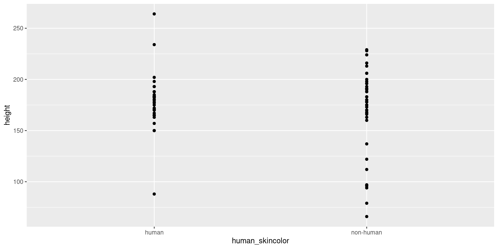
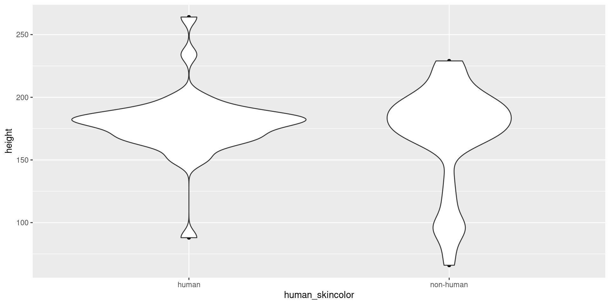

install.packages("dplyr")
install.packages("ggplot2")
install.packages("tidyverse")
install.packages("devtools")
devtools::install_github("rstudio-education/dsbox")Modern Statistical Computing
1. Basics
Pompeu Fabra University
Scatterplots help reveal trends, and outliers
par(mar = c(4, 4, 1, .1))
plot(starwars$height, starwars$mass, xlab='Height (cm)', ylab='Mass (kg)')
Same figure, now using ggplot (to be discussed)
Code
ggplot(data = starwars, mapping = aes(x = height, y = mass)) +
geom_point() +
labs(title = "Mass vs. height of Starwars characters", x="Height (cm)", y="Weight (kg)") +
geom_point(data= starwars %>% filter(name=="Jabba Desilijic Tiure"), size=5, pch=1, color="pink", stroke=3)
Histogram
Duke university student survey data (student_survey) from package dsbox
tt= 'How old were you when you had the first kiss'
fk= student_survey$first_kissLet’s first use R’s basic function hist
hist(fk,xlab='Years',main=tt)
hist(fk,prob=TRUE,xlab='Years',main=tt)
Next use ggplot and adjust the bin width
Code
ggplot(student_survey, aes(x = first_kiss)) +
geom_histogram(binwidth = 1) +
labs(title = "How old were you when you had your first kiss?", x = "Age (years)", y = NULL)
Example
Boxplot: height distribution vs. skin color (human/non-human)?
mycols= c('fair','white','light','brown','dark')
starwars$human_skincolor= ifelse(starwars$skin_color %in% mycols, 'human', 'non-human')
boxplot(height ~ human_skincolor, data=starwars, names=c('No','Yes'), xlab='Human skin color')
ggplot(data = starwars) +
geom_point(mapping = aes(x = height, y = mass))
mapping is shared, pass it to ggplot and all geoms will use it (by default)
ggplot(data = starwars, mapping = aes(x = height, y = mass)) +
geom_point() +
geom_smooth(method='lm')
Facets
Facets allow splitting the plot by one or more variables
ggplot(data = starwars, aes(x = height, y = mass)) +
geom_point() +
geom_smooth(method='lm') +
facet_wrap(~ human_skincolor)
Line types
ggplot(data = starwars, aes(x = height, y = mass, color=human_skincolor)) +
geom_point(aes(shape=human_skincolor)) +
geom_smooth(aes(linetype= human_skincolor), method='lm', se=TRUE)
Violin plot
boxplot(height ~ human_skincolor, data=starwars, names=c('No','Yes'), xlab='Human skin color')
ggplot(starwars, aes(x=human_skincolor, y=height)) +
geom_point()
ggplot(starwars, aes(x=human_skincolor, y=height)) +
geom_point() +
geom_violin()
Barplot (counts)
Count the number of diamonds with each cut quality (variable cut) in dataset diamonds
ggplot(diamonds) +
geom_bar(aes(x = cut))
Barplot (percentage)
To plot percentages we use y=after_stat(prop), for some funny reason we must also set group=1.
ggplot(diamonds) +
geom_bar(aes(x = cut, y=after_stat(prop), group=1))
Barplot (percentage)
Finally, scale_y_continuous changes the 0-1 scale to %. We also set axis labels and increase their default size
ggplot(diamonds) +
geom_bar(aes(x = cut, y=after_stat(prop), group=1)) +
scale_y_continuous(labels = scales::percent_format()) +
xlab("Diamond cut") + ylab("Percentage") +
theme(axis.text=element_text(size=12), axis.title=element_text(size=14,face="bold"))
Multiple barplots
fill aesthetic split counts according to the specified variable (diamond clarity)
ggplot(diamonds) +
geom_bar(aes(x = cut, fill = clarity))
Multiple barplots
position="dodge" places bars beside each other
ggplot(diamonds) +
geom_bar(aes(x = cut, fill = clarity), position = "dodge")
# a boring regression
fit = lm(dist ~ 1 + speed, data = cars)
coef(summary(fit))# Estimate Std. Error t value Pr(>|t|)
# (Intercept) -17.579095 6.7584402 -2.601058 1.231882e-02
# speed 3.932409 0.4155128 9.463990 1.489836e-12